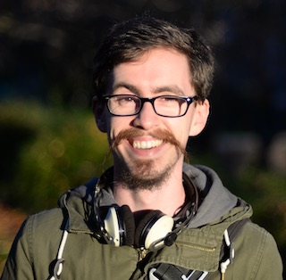
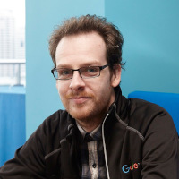
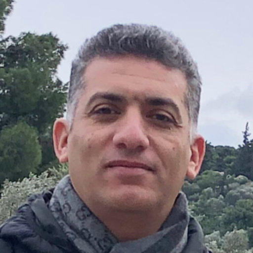
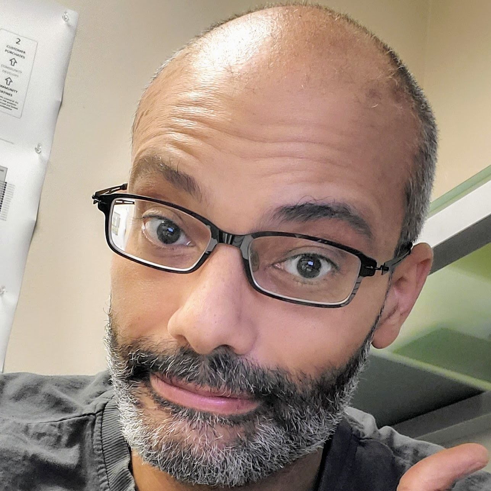
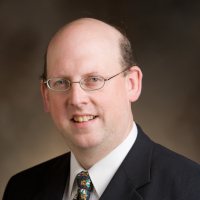
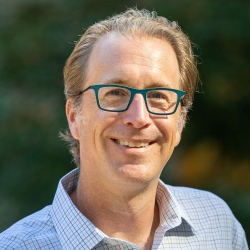
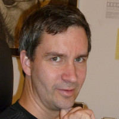

FOSSi Dial-Up is the premier online event around Free and Open Source Silicon and EDA tools. It features selected speakers from the rapidly developing FOSSi ecosystem.
Upcoming New
- Our current set of episodes focuses on the topic "Evolving Communities". Free and Open Source Silicon and its ecosystem has existed for at least 20 years now and it has seen ups and downs and a rapid growth just over the last couple of years. Learn more about how developer communities changed over time, which challenges they faced and how they benefit from latest developments.
-
First Impressions from the Skywater Open Source PDK Shuttle
June 15, 2021 15:00 GMT, 16:00 BST, 08:00 PDT, 23:00 CST
In 2020 FOSSi Dial-Up kick-off with a big bang: Tim Ansell presenting the Skywater Open Source PDK. The project got a lot of attention and many developers in the community got their first time experience with backend chip design. Even bigger was the excitement when free spots on the chip shuttle for 40 community designs were announced.
In this session multiple participants of the "MPW-ONE" shuttle run will present their designs and discuss their experience:
- Matthew Venn - Multi Project Harness
- Steve Kelly - RAPcore
- Tristan Gingold - OpenTDC
- Vladimir Milovanović - Spectravel and linsorter
-
Jonathan Balkind - Growing OpenPiton
June 22, 2021 15:00 GMT, 16:00 BST, 08:00 PDT, 23:00 CST
For six years, OpenPiton has provided hardware designs, build and verification scripts, and other infrastructure to enable efficient, detailed research into manycores and systems-on-chip. It enables open-source hardware development through its open design and support of a plethora of open simulators and CAD tools. OpenPiton was first designed to perform cutting-edge computer architecture research at Princeton University and opening it up to the public has led to thousands of downloads and numerous academic publications spanning many subfields within computing.
In this talk, Jonathan will share some of the lessons learned during the development of OpenPiton, provide examples of how OpenPiton has been used to efficiently test novel research ideas, and discuss how OpenPiton has evolved due to its open development and feedback from the open-source community.
About the speaker: Jonathan is the lead developer of the OpenPiton platform and an Assistant Professor in the Department of Computer Science at the University of California, Santa Barbara.
Sponsors
Past Events
-
The first set of Dial-Up talks centered around the SkyWater PDK and has concluded. You can watch all recordings on YouTube.
-
Tim Ansell - Fully open source manufacturable PDK for a 130nm process
The SkyWater Open Source Process Design Kit (PDK) is a joint project of Google and SkyWater Technology Foundry to provide a fully open source PDK.
In this event, Tim Ansell will outline the collaboration and the goals of the project. He will get into the technical details of the PDK and outline the roadmap of the project.
-
Mohamed Shalan - OpenLane, A Digital ASIC Flow for SkyWater 130nm Open PDK
Unlike the wider software world, Electronic Design Automation (EDA) open-source landscape has been fragmented for a long time, requiring significant effort and knowledge in a variety of disciplines to assemble a working ASIC flow. This has changed with projects such as Qflow and OpenROAD that aim at developing open-source toolchain for digital layout generation from RTL.
OpenLane is an automated RTL to GDSII flow based on available opensource EDA tools configured/tuned for the SkyWater 130nm PDK. OpenLane main objective is to generate a clean layout from RTL designs in less than 24-hours with zero human interventions. OpenLane has been used, successfully, to tape-out a family of test chips (striVe).
-
Mohamed Kassem - The striVe RISC-V SoC Family on SkyWater 130nm

Apache 2.0-Licensed Software to SiliconFor the first time in the history of the semiconductor industry it is possible to design, verify, manufacture Systems-on-Chip (SoC)'s that have been completely developed using an open source process technology, open source IP and open source design automation environment.
In a collaborative effort with Google and SkyWater, efabless' team has designed and implemented the striVe SoC family using SkyWater's SKY130 130nm process, efabless' OpenLANE RTL2GDS no-human-in-the-loop SoC compiler and several key FOSS components including standard cell and IO libraries from SkyWater and OSU, Dual port SRAM created using OpenRAM, PicoRV32 RISC-V CPU and future versions that will include open source eFPGA blocks - all of them are available under the Apache 2.0 license.
Mohamed will present the striVe open source SoC family with its 6 configurations which will be publicly released to the design community as concrete designs currently on their way to manufacturing. Being truly FOSS and foundry-enabled, the striVe SoC family will serve as physical demonstrators and be the seed for countless community-defined and designed SoC's stretching the limits of innovation and to serve select commercial markets.
-
James Stine - Designing new 130nm cells for SkyWater 130nm
Existing design flows and tools require excessive design costs to achieve the power, area, and performance requirements of complex system-on-chip (SoC) solutions. Consequently, the semiconductor industry needs high-level synthesis tools that provide the ability to quickly develop and accurately evaluate complex SoC solutions. These tools should provide accurate area, delay, and power estimates from high-level SoC architecture descriptions. They should also provide support for a wide variety of components including embedded memories, mixed-signal designs, custom and standard cell circuits, high-performance/low-power processors, and communication structures, such as buses and on-chip networks. In addition to being well documented, easy to use, and publicly available, the design flows should work in conjunction with industry-standard design tools.
This project will provide publicly-available high-level synthesis tools for complex SoC solutions for the SkyWater 130nm. The tools improve productivity by allowing SoC designers to quickly develop and evaluate high-performance, low-power systems. They also provide an improved understanding of area, performance, and power tradeoffs in SoC designs. The instructional materials and sample SoC architectures provided are useful for engineers, edu- cators, and students, who are new to the area of SoC design, as well. Most importantly, the tools are designed to be free and open-source software (FOSS) and integrate with tools from eFabless as well as other open-source endeavors.
-
Matt Guthaus - OpenRAM on SkyWater 130nm
OpenRAM is an open-source Python framework to create the layout, netlists, timing and power models, placement and routing models, and other views necessary to use SRAMs in ASIC design. OpenRAM supports integration in both commercial and open-source flows with both predictive and fabricable technologies.
-
Tim Edwards - Using Magic for DRC checks on SkyWater 130nm
Magic was long known as the layout tool that does interactive DRC. Which it still does! Plus a lot of new tricks that are less well known. With the decline of SCMOS, there has been no way to demonstrate its capabilities. With the new SkyWater open PDK, we can show how magic does interactive and batch DRC; density, stress, latchup, and antenna rules, and much more. -
Mohamed Kassem - The first shuttle with the SkyWater Open Source PDK
The SkyWater OpenPDK SKY130 was released to the open community on June 30, 2020. It was a major milestone in opening new fronts in the semiconductor industry. Hundreds of community members joined the movement and started using the PDK in a variety of designs. On November 30 2020, more than 40 designers and design teams committed to submit their work on mpw-one, the first of 6 shuttles Google is funding to engage the community. Teams experience range from a freshman in college to companies like IBM, QuickLogic and Western Digital. The designs included several RISC-V cores and SoCs, four eFPGAs, OpenPOWER SoC, Analog/RF designs and an MRAM! Mohamed will shed more light on the fantastic outcomes of the first shuttle, its content, plans for testing and the plan for the next shuttle. -
Wilson Snyder - Looking back at 25 years of Verilator
Wilson Snyder, primary author of Verilator, talks of Verilator, the open source RTL simulator's, inception in 1994, major milestones, adapting use cases over time, and futures.
About the speaker: Wilson Snyder is a Distinguished Engineer and a lead silicon architect with Marvell in Marlboro, Massachusetts. A graduate of Rensselaer, he also known for his contributions to public domain CAD tools including Verilog-Mode for Emacs, and Verilator.
-
Philipp Wagner - The long path to a sustainable cocotb community

May 25, 2021 16:00 GMT, 17:00 BST, 9:00 PDT, 23:59 CST
Cocotb is a highly productive hardware verification approach using Python as test language. Since its first release in 2013 cocotb has constantly grown in popularity. Which is great! And a challenge. Providing support to users, agreeing on a development roadmap, and ultimately implementing, testing and releasing features and bug fixes requires a lot of resources -- certainly more than one or two developers can provide. After a more quiet period cocotb is now maintained collaboratively by a group of maintainers, which has solved the capacity issues nicely.
In this talk, Philipp will present a bit of history on cocotb, how maintaining popular software is challenging, and ways the cocotb project found useful to solve those issues. Of course we'll also look at some of the newest features of cocotb and how they make verifying hardware even more productive.
About the speaker: Philipp is one of the maintainers of cocotb, a FOSSi Foundation director, and hardware and software engineer at lowRISC in Cambridge, UK.